Saturday, September 19, 2026
Crew 11:25a · Cast 11:25a · Wrap 10:15p
Opens the day outside. The arrival — Martha only
home video glitch into martha arrival
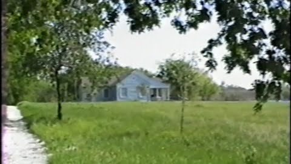
20 (25) + Ruthie pieces of 8 (est. 10) and 10 (est. 20), parked at the Blue House. Martha pulls the wig off in this block, so she is wigless from 21 on. Everything needed from 10 came out of this chunk (Andrew, Sept 19 at wrap), so Day 2 no longer carries it
Scene 8 — Ruthie screaming in the car
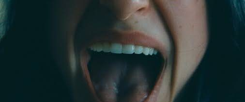
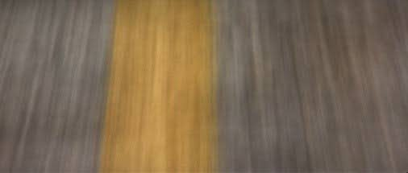
Scene 10 — Martha and ruthie talk
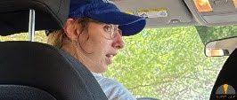
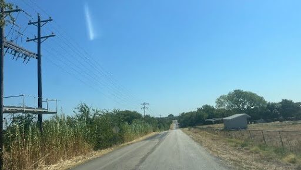
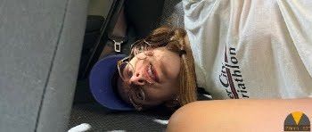
Scene 20 — Ruthie in the back seat confused
Door break. The first time the crew is inside the house. Shot with 22 (Mary + Ryan)
Martha crowbars the front door open
Martha gives Ruthie a tour
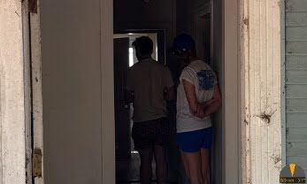
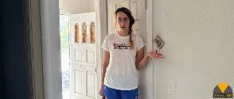
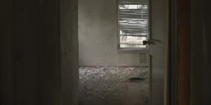
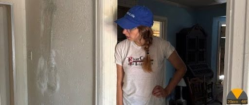
Martha gives Ruthie a tour - name carved on wall
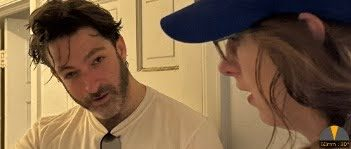
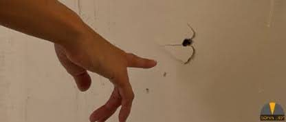
Back on Day 1 in script order. 45 min off the shot list: a wide, a two-shot over-shoulder and the cow-wallpaper insert. The wallpaper is already up
Martha gives Ruthie a tour - bathroom, cow wallpaper
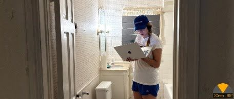
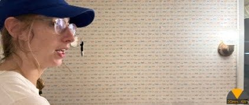
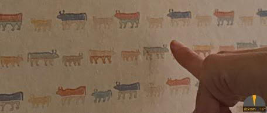
Starts 7:20 PM (Andrew, Sept 18 evening), 9 minutes BEFORE the 7:29 sunset — the first half-hour is real light going to dusk, then full dark, which is the point. No blackout (Andrew OK'd Sept 17). Keeps its 2h 55m, so the day ENDS 10:15 PM, 25 minutes earlier than before. Becca has the TV room until 7:20. CONTINUITY: HMU — 26 (the tackle) now shoots TOMORROW but comes BEFORE this in the story. Photograph the dirt and the restraints on Ruthie before and during this scene; tomorrow matches back to those stills
martha ties Ruthie up and puts on the home video tapes
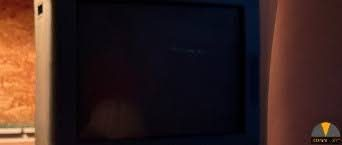
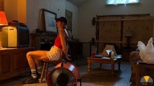
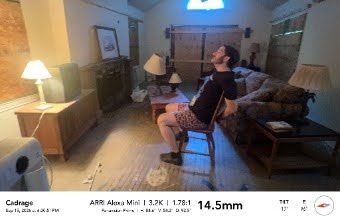
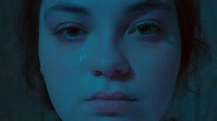
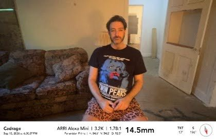
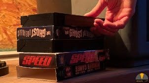
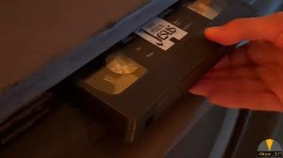
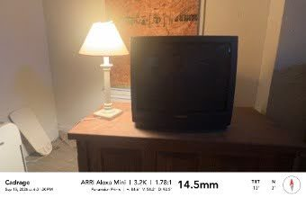
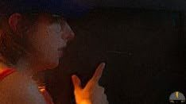
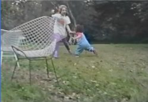
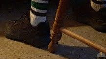
Sunday, September 20, 2026
Crew 11:30a · Cast 11:30a · Wrap 9:40p
Moved from Day 4 (Andrew, Sept 19 at wrap) — the AirBnB is not ready, so 2 and 3 go to Day 4 and the day is all Blue House. Ruthie in the CULT OUTFIT
Martha and Ruthie watch more home movies, Ruthie has idea to go method
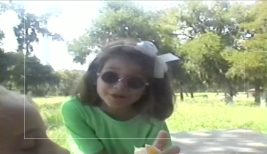
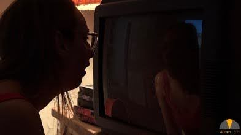
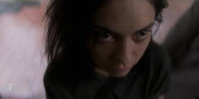
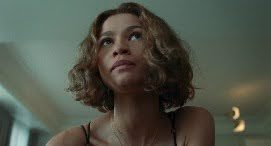
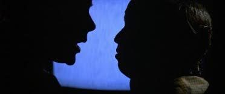
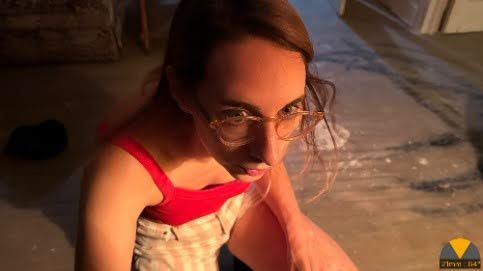
IN THE CAN (Andrew, Sept 20) — shot with 48 while the kitchen was up. Two setups: the cabinet insert into a dolly move to profile, and the wide where Ruthie runs
Martha gives Ruthie a tour - shows her a mug in kitchen cabinet, ruthie runs away
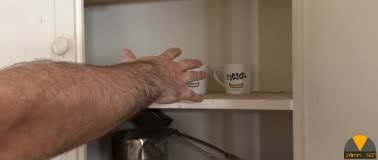
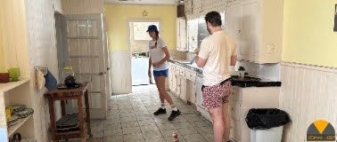
THE CHANGE HAPPENS AT THE MEAL now that 45 has moved to Day 5 (Andrew, Sept 20). Martha's doc-camera POV rig. HMU: photograph this look from every angle. It is the ONLY time the green shirt is in front of you this week — 46, 45 and 47 all shoot on Day 5 and have to match back to tonight
Ruthie in butterfly face paint
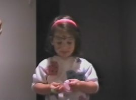
Moved DOWN from Day 4 (Andrew, Sept 20). Real night, no blackout. NOTE: 34 stays on Day 4, so the dining-room setup is built twice and has to match across the two days
Martha edits
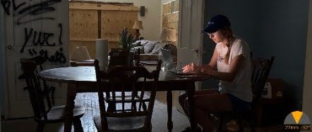
Moved DOWN from Day 4 (Andrew, Sept 20). Same dining-room setup as 28
martha records audio, sees phone rinigng
The rest of 27 off Day 1, MINUS the PIX interview: Alexa on Ruthie watching the TV · Alexa on Ruthie's TV with the TV light · Alexa on the CRT. The PIX on the Ruthie interview is now 27K and moved to Day 5 (Andrew, Sept 20). Jenny in the cult outfit, back in the chair, matched to Day 1 — HMU has the stills. CRT sync and the macro lens again. 12J and 12K are plates
martha ties Ruthie up and puts on the home video tapes
Moved DOWN from Day 5 (Andrew, Sept 20). Real night, no blackout. Ruthie clean makeup — she comes out of the cult look after 27
Ruthie watches home movies tied up
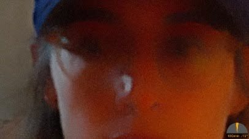
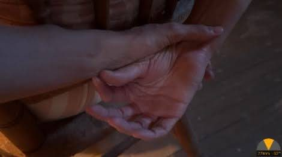
IN THE CAN (Andrew, Sept 21) — shot in a series with 32, inside that block, so it takes no time of its own here. This is the Ruthie half of scene 31; the porch call with Simon is 31-1 and shoots Day 6. Recorded so the scene reads as covered
Martha on the phone with simon. Shooting star.
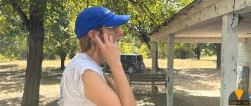
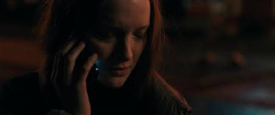
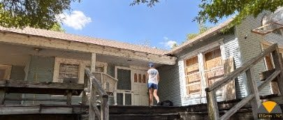
Monday, September 21, 2026
Crew 10:00a · Cast 10:00a · Wrap 10:00p
Martha alone in the bushes, 25 min — moved AHEAD of 5 (Andrew, Sept 18 evening) so the troupe scene does not start until 10:45. Jim and Jan collect a tripod from Panavision, 8000 Jetstar Dr, Irving, at 9:00 AM and drive up; roughly 38-40 mi, an estimate off the road grid, not routed. [CHECK — Mary: is the troupe needed in frame or for eyelines in 6? If yes, the swap does not work]
Martha spies on the cult through the bushes
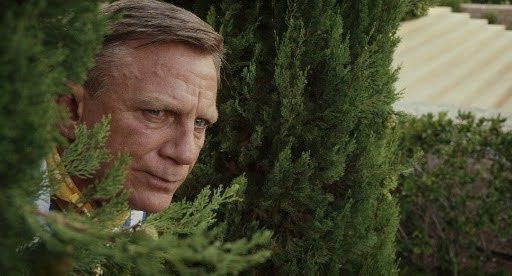
The ten-person troupe scene — Jim and Jan have to be here, which is why 6 shot first. The troupe does NOT wrap after this: scene 7 also carries cast 13, so all ten are held through 7 and released at 1:30 PM
Martha spies on the cult
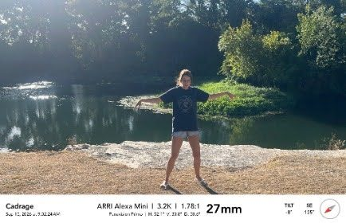
1h 35m, up from 1h 20m (Andrew, Sept 20) so the block lands the troupe wrap at 1:30 PM and starts 12 there. Cast 13 — all ten of the troupe — are in this scene, which is why the cult wrap comes after 7 and not after 5
Martha drives away with Ruthie tied up in the back seat and cult members chasing the car
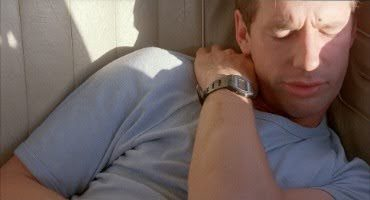
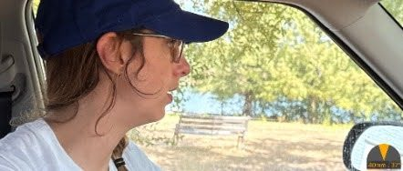
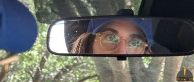
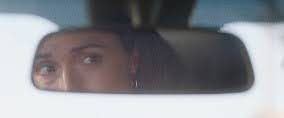
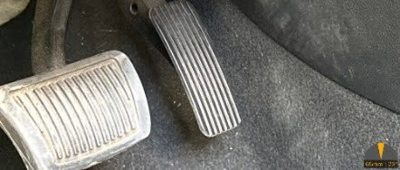
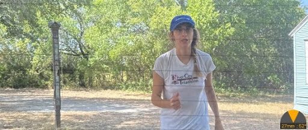
Moved ahead of 11 (Andrew, Sept 18) so all the blue-truck work sits together. Lloyd and Jim only
cultist films martha and ruthie
The car drives off, watched from the truck. Shot straight after 12 while the truck is still here. WILD LINES: Rod records Lloyd's sc 16 megaphone line, and anything else wild, in this block — it is why Lloyd is not held until tonight · The rest of 11, no truck in frame: the quick inserts. IN FRAME: Martha and Ruthie only — Jim, Lloyd and Howard are HELD through this block, not working, and released at the end of it
Martha pulls over to pee, Ruthie attempts to escape
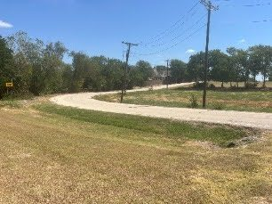
Day-for-night: motel window blacked out. First shot at the inn is 5:00 PM sharp (Andrew, Sept 20)
martha tries to get interview out of ruthie
martha edits
110 min, up from 75 (Andrew, Sept 18): nine setups on the shot list, the most of any scene today. NO BLUE TRUCK TONIGHT (Andrew, Sept 20): the second call is cancelled and the truck wraps at 3:00 PM, so 9.16 — the wide of the truck with its headlights pointed into the room — cannot be shot. Light the window some other way or drop the setup. The 110 min stands, which leaves cushion
martha edits, cult looks for ruthie with light
Ends 9:40 PM. The motel is held to 10:00 PM tonight, past the usual 9:30 (Andrew, Sept 20)
Martha and Ruthie go to the car through motel parking lot
Tuesday, September 22, 2026
Crew 1:00p · Cast 1:00p · Wrap 11:00p
Ruthie struts the hallway ALREADY CHANGED — she arrives on the day in the 90s-kid look: green shirt, floral leggings, bow and sunglasses. Sunglasses come off when she wobbles. Martha is OFF SCREEN — her lines here are recorded WILD in the 46 block
Ruthie pops out in 90s kid clothes
Green shirt, straight on from 45, and it shoots DRY — 46 soaks the shirt, so this has to be ahead of it. Martha is OFF SCREEN — her lines here are recorded WILD in the 46 block
Ruthie dances
Ruthie in the inner tube on the lake. Green shirt, matched to the Day 2 stills from 48. SHE SOAKS: doubles needed and the water-safety kit up. 90 min for 4 setups. WILD LINES: Rod records Martha’s off-screen lines for 45 and 47 in this block
Ruthie reenacts a lake video
Pickups on scene 7: Ruthie coverage in the back seat, RUTHIE ONLY — she is SCREAMING AT MARTHA, who is not in frame. Martha is not in it and the cult troupe is not called. Cult outfit. The car is parked at the Blue House, so keep it TIGHT — ECUs and inserts that do not show background through the glass
Martha drives away with Ruthie tied up in the back seat and cult members chasing the car
THE TACKLE, in the golden hour against a 7:25 sunset. Cult outfit, same as the pickups before it and the blood block after it. CONTINUITY: 27, shot Day 1 and Day 2, comes AFTER this in the story — the dirt and the restraints match back to the Day 1 stills
Ruthie runs away, Martha tackles her
START OF THE BLOOD BLOCK, and it runs UNBROKEN to wrap: 34, 35 and 36 back to back so the blood is built once and never reset. 55 min for 4 setups. Martha alone at the laptop. The dining room is dark on its own at 7:35 PM — no blackout
Martha edits, computer glitches and glows, she gets a nosebleed
Straight on from 34. 75 min for 4 setups. Both noses bleed, Ruthie tears free of the chair and runs straight into 36
Ruthie's nose is bleeding, Martha approaches, Ruthie runs away
Straight on from 35, and LAST OF THE DAY. 75 min for 5 setups. Ruthie runs through the brambles; MARTHA carries the flashlight and loses her. THE DRESS DOES NOT TEAR — cut in production, 44 is already shot with it untorn
Ruthie runs away, martha chases and loses her
Wednesday, September 23, 2026
Crew 11:00a · Cast 10:30a · Wrap 10:20p
Opens the film and opens the day. Simon is VOICE ONLY — not on set — so this is Grace alone on camera
Martha watches the footage frustrated
The packing montage, and everything in it goes into the trunk in 4 after the move
Martha gathers kidnapping materials
Follows 3 across the move. Shot at the BLUE HOUSE, not the AirBnB
Martha loads up her trunk
Martha only — walls and wallpapers with her hand on them, corny stock music, a phone ring at the end. GRACE WRAPS AFTER THIS — 2:25 PM
Martha's edit of the textures of the house
Phillip and the drone, 3:25 PM. Infrared, with a countdown clock over frame|| PHILLIP HAS TO BE TOLD — this is the fourth time it has moved, and he has not been told any of them
drone infrared spy camera of the house / alien POV
Ruthie curls, blush, lipstick. CONTINUITY: photograph the look for 60–62 on Day 7
ruthie does her stage makeup
EVEN MORE lipstick, right after 59 — same bathroom|| OPEN: the script asks “Dianne Ladd style? Or is she putting on mime makeup?” and the breakdown has it undecided. Mary needs to rule before Wednesday.
ruthie has a meltdown doing mime makeup
Ruthie in the cult outfit, back in the chair, matched to Day 1 and to the Day 2 plates; HMU has the stills. Martha is not in it
martha ties Ruthie up and puts on the home video tapes
At the dusk the script asks for. Green shirt, matched to the Day 4 stills from 45 and 46
martha films ruthie with the popsicles
Ruthie only, and the last thing tonight. CONTINUITY: this sets the wet look and the cult dress; 39 on Day 6 matches BACK to it
Ruthie collapses, hears something, sees stars glow
Saturday, September 26, 2026
Crew 2:15p · Cast 4:15p · Wrap 11:00p
Martha alone in the TV room after losing Ruthie in 36. CONTINUITY: 36 shot Day 4, four days ago, so THE NOSEBLEED HAS TO BE REBUILT AND MATCHED to the Day 4 stills. HMU can build it during the 2-hour blackout rig, so it costs no shooting time
Martha comes back to the house defeated, sits on the floor
CONTINUITY: 38 shot Day 5, so the wet hair and cult dress MATCH BACK to the Day 5 stills. 40 follows this in the story and shoots Day 8 — photograph her from every angle before she dries off
Ruthie returns and asks Martha for help
Martha only — she waits at the closed door with the leash, checking her watch, variety show music playing from the TV in the other room. Shot under the house blackout
martha holds the other end of Ruthie's leash on the other side of the door while she gets ready
MARTHA ONLY — Simon is a phone voice, and the Ruthie insert 31-2 is already in the can from Day 2 with 32
Martha on the phone with simon. Shooting star.
Martha sweeps the perimeter with a flashlight, yelling threats
Martha looks around the house with a flashlight
Pepper spray from the trunk, straight after 41
Martha looks around in her car and finds pepper spray
No-cast plate — the house outline glows with electricity and the windows blast white/pink light
ext shot of house glowing
Sunday, September 27, 2026
Crew 11:00a · Cast 11:00a · Wrap 9:20p
SHOT FIRST, in the Dining Room, while G&E finish lighting the stage in the TV Room. Backstage between acts — cape
Martha and Ruthie prep for the magic portion of the show
Ruthie sits down for an interview, sings the baby Ruthie theme song, triggers the Baby Ruthie Show alien transmission
Ruthie rematerializes on the couch, they get the assignment to put on a variety show
Martha and ruthie look at each other
CONTINUITY: Ruthie makeup + curls from 59 (Day 5). Wardrobe: the sparkly version of the green shirt, leggings + bowtie she is in from 45, plus the trash tutu and hat. THE STAGE GOES UP HERE and stays through 62 and 68
the stage has materialized, Ruthie does Baby Ruthie show intro song and dance
Straight on from 60, same stage
Ruthie does a magic show, gets boo'd, runs off stage
Straight on from 62 on the same stage — the curtains part on the ventriloquist act. LAST OF THE DAY; strike the stage after this. The room is still clean: 70 on Day 8 is what trashes it. Jenny and Grace wrap together
martha and ruthie do a freaky ventrilloquist act
Monday, September 28, 2026
Crew 11:00a · Cast 11:00a · Wrap 9:00p
THE SCAR — the neck implant appliance, first look, as Martha parts Ruthie’s hair. SAME APPLIANCE AS 54 THIS AFTERNOON, so it is built once, with McCailyn on. CONTINUITY: 39 shot Day 6 — Ruthie is still damp from it and the hug is the cut straight before this; match back to the Day 6 stills
Ruthie and Martha cuddle, Martha notices Ruthie's scar and gets a call from an unknown number
Follows 40. Ruthie hums THE SONG in her sleep
Martha snuggles with Ruthie and tries to sleep
The scar again, now metallic and glowing on the reveal — same appliance as 40 this morning
Martha and Ruthie watch the baby ruthie show confused, get a glimpse of mom, ruthie's implant is activated and she passes out, Martha uses Ruthie's implant to flip through channels
Lloyd + Jim
martha and ruthie get the bad news- they will get cancelled unless the final number is amazing, cult busts in, ruthie glitches out
Tuesday, September 29, 2026
Crew 11:00a · Cast 11:00a · Wrap 9:50p
Opens the day. Same kitchen set as 71, 72 and 74
ruthie has a meltdown, Martha hypes her up
THE IMPLANT — the neck slice, the screwdriver and the tape rig, McCailyn on. Straight on into 72
martha tries to surgically repair the glitching alien implant, gets idea for the knife fight
Shoot 72 + 74 as one block — the meal sits between them but the setup does not change
Martha and Ruthie do a knife fight
Same block as 72. CONTINUITY: the blood gag runs into 75, which shoots TOMORROW — photograph the blood on both before it comes off
the knife fight continues - martha is killed
Ruthie only · beam of light, same rig as 76
Ruthie is abducted in the beam of light
CONTINUITY: blood continues from 75, which shoots tomorrow — the look is SET HERE and 75 matches back to it
Martha and ruthie walk outside to the alien applause
Wednesday, September 30, 2026
Crew 12:00p · Cast 12:00p · Wrap 10:15p
THE ANIMATED TALK SHOW — the whole environment is animated. Ruthie’s hologram in an armchair, to be composited: shoot her against a backdrop in whatever corner is free. Not a TV Room setup
Ruthie is astral projected into the alien talk show for an interview and learns all about hte baby ruthie show
TV Room in its trashed state from 70 — scorch marks stay. CONTINUITY: blood matches back to 74 and 76, shot yesterday; McCailyn is on
Mother appears on the tv and tells the sisters she chose to stay in touch
Grab 18 montage night pieces
martha drives away, sees space ship in rear view, listens to radio
Marhta gets out and barfs
marhta talks to simon on th phone
No cast
martha drives into the distance